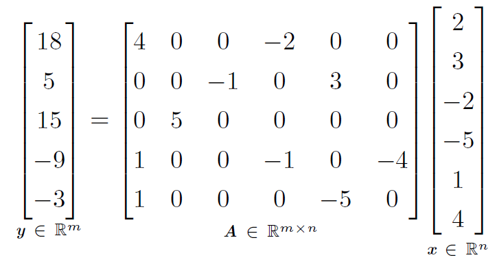

[success]
这里的"表示"是个名词
前文所述的权重衰减直接惩罚模型参数。 另一种策略是惩罚神经网络中的激活单元，稀疏化激活单元。 这种策略间接地对模型参数施加了复杂惩罚。
[success] L1/L2正则化 VS 稀疏表示
正则化：对参数惩罚，诱导参数为0
稀疏表示：对激活单元正则化，诱导元素为0
正则化的稀疏表示，表达惩罚的方式相同，只是惩罚项的内容不同。
稀疏表示 VS dropout
目的都是减少激活单元，实现方式不同。
稀疏表示使用惩罚或约束的方式。
dropout使用抽样的方式。
我们已经讨论过（在\secref{sec:l1_regularization}中）惩罚如何诱导稀疏的参数，即许多参数为零（或接近于零）。
另一方面，表示的稀疏性描述了一个表示中许多元素是零（或接近零）的情况。
我们可以线性回归的情况下简单说明这种区别：

[success]
L1参数正则化诱导稀疏参数是指“许多参数(w)为0”

[success]
稀疏表示想要的是“许多元素(h)为0”
第一个表达式是参数稀疏的线性回归模型的例子。
第二个表达式是数据具有稀疏表示 的线性回归。
也就是说，是的一个函数，在某种意义上表示存在于中的信息，但只是用一个稀疏向量表示。
表示的正则化可以使用参数正则化中同种类型的机制实现。
[success]
"表示的正则化"是“怎样惩罚激活单元”的意思。
方式一：范数惩罚
方式二：施加约束
表示的范数惩罚正则化是通过向损失函数 添加对表示的范数惩罚来实现的。
我们将这个惩罚记作。
和以前一样，我们将正则化后的损失函数记作：
其中 权衡范数惩罚项的相对贡献，越大的对应越多的正则化。
正如对参数的惩罚诱导参数稀疏性，对表示元素的惩罚诱导稀疏的表示： 。 当然惩罚是使表示稀疏的方法之一。 其他方法还包括从表示上的Student-t先验导出的惩罚\citep{Olshausen+Field-1996,Bergstra-Phd-2011}和KL散度惩罚\citep{Larochelle+Bengio-2008}，这些方法对于将表示中的元素约束于单位区间上特别有用。
[warning] [?] Student-t先验导出的惩罚? [?] KL散度惩罚?
\cite{HonglakL2008-small}和\cite{Goodfellow2009}都提供了正则化几个样本平均激活的例子，即令接近某些目标值（如每项都是的向量）。
还有一些其他方法通过激活值的硬性约束来获得表示稀疏。
例如，\textbf{正交匹配追踪}(orthogonal matching pursuit)\citep{pati93orthogonal}通过解决以下约束优化问题将输入值编码成表示
其中是中非零项的个数。 当被约束为正交时，我们可以高效地解决这个问题。
[warning] 怎么将W约束为正交？
这种方法通常被称为\ENNAME{OMP}-，通过指定允许的非零特征数量。 \cite{Coates2011b}证明\ENNAME{OMP}-可以成为深度架构中非常有效的特征提取器。
含有隐藏单元的模型在本质上都能变得稀疏。 在本书中，我们将看到在各种情况下使用稀疏正则化的例子。
[warning] 例子在哪？